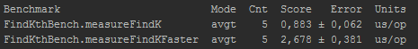
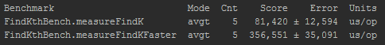

Время работы поиска К-ой порядковой статистики:
K-ая порядковая статистика в среднем O(n) - measureFindK
K-ая порядковая статистика в худшем O(n) - measureFindKFaster
На 100 элементах:

На 10000 элементах:

ГЛАВНАЯ СТРАНИЦА